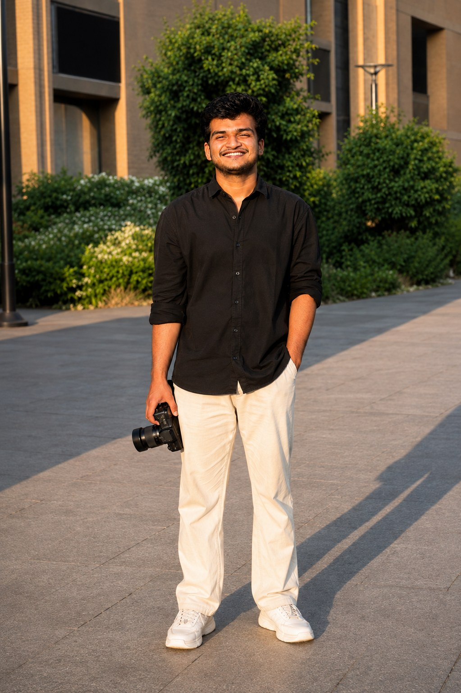

I'm Muhammed Midhilaj, a passionate photographer with an eye for capturing raw emotions and untold stories. Through my lens, I aim to freeze moments in time, creating images that speak beyond words.
Photography is my way of storytelling, a silent dialogue with the world around me. Whether it's the vibrant chaos of a crowded street or the subtle calm of evening light, each frame is a piece of the story I'm piecing together.

A silent dialogue with the world around me — every frame is a piece of the story I'm piecing together.